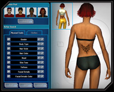
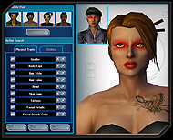
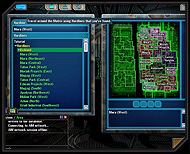
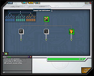
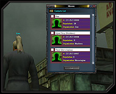
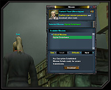
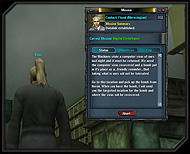
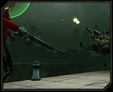
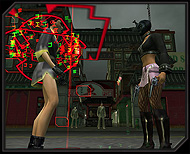

In this article, we will be summarizing the major game play concepts for
The Matrix Online. We hope this page will provide quick and useful insights
into playing and surviving inside of the complex virtual world of The
Matrix. We will be updating and expanding this section often in the days and
weeks ahead. We hope you enjoy this article!
Game Basics: Quick
Links
Game Basics: Character
Creation
The first thing to do , once you have created
an account , is to choose a server on which to create your first character.
You are limited to a single character per server, although you may
have characters on many different servers. If you are planning on playing
with other people make sure you are all playing on the same server.
Once you have selected a server, you will be prompted to select a personality
archetype. Though this choice will affect your character’s initial
capabilities, everybody changes after taking the red pill and you will
be given the chance to alter your character’s attributes as you
gain experience.
The next step is to create
an appearance for your character’s
RSI (Residual Self Image). Spend some time now on choosing your
physical traits because they cannot be changed after this point. The
one exception is clothing, which you will see is limited here, but
that will soon be remedied. Once you jack in and start exploring the
Matrix you will find yourself overwhelmed with new and stylish options
for just about any taste.
|  |

| 
|
Male or Female? |
Physical Traits ? |
Choose Your Outfit! |
Finally you need to select a unique handle for your
character. This name will become a part of your AIM name, and therefore
must not only be unique to the server, but unique across all servers.
You will also be asked to create a name for your character’s name
as a bluepill (for example, Neo’s
name as a bluepill was “Thomas Anderson”).
Game Basics: The
Tutorial
Once you create your character you will be put into the first mission.
This mission will help you understand the basics of movement, combat, and
interacting with other players and the environment. Try to pay attention,
but if you miss something you can always go back and play the tutorial again
by selecting it from the hardlines list in the loading area.
Game Basics: The
Loading Area
The Loading Area is an extremely important part of
playing The Matrix Online. As a redpill, newly freed from the virtual prison
of the Machines, you will spend some of your time Jacked Out of the Matrix.
When you are not in The Matrix, you have access to several important functions
inside of the Loading Area that will aid your experiences once you Jack
In.
 |
 |
 |
Review your Loadout |
Check Hardlines |
Manage Inventory |
These functions allow you to adjust your residual
self image, load and unload special abilities and disciplines, access hardlines
that you have discovered inside the Matrix, manage your inventory and storage,
and lastly gain access to a virtual market place system to buy and sell
crucial equipment from other redpills.
|  |
 |
Load and Unload Disciplines |
The Virtual Market Place |
Game
Basics: The
Mission System
Missions are central to The Matrix Online, as they are the first point of
contact for the Zion, Machine, and Exile Organizations. Consequently, missions
serve as the most effective way for a redpill to engage and affect the overarching
storyline. Missions also serve as a great source for both experience and information,
in addition to being one of the ways a redpill can find very rare clothing
and equipment.
When a redpill enters the Matrix for the first time, they are able to embark
on a mission immediately. To do so, they have only to open the Mission Panel
and choose the first Zion mission. Although the redpills will eventually have
the freedom to accept missions from any of the three Organizations, it is Zion
that provides the necessary training for all fledgling redpills. As a redpill
grows in ability and capacity, the other Organizations will take a decidedly
aggressive interest in their services.
|  |
 |
 |
Contact a Controller |
Choose a Mission |
Read the Briefing |
Once a mission has been accepted, a redpill will need to look at their compass,
or map, which will identify the direction they need to go in. Once in a mission
there are several things to pay attention to. First and foremost, a redpill
need to pay close attention to both the operator and controller for the instructions
necessary to complete a mission. A successful conclusion to a mission requires
that a redpill do everything that is asked of them. To that end, the Mission
Panel can be accessed throughout a mission, allowing the redpill to see a list
of the current mission objectives. It is important to note that a redpill will
come across many different kinds of containers throughout their mission- a
thorough check of those containers could yield any number of valuable and rare
items.
 |
 |
Review Your Objectives |
Follow the Target |
Once a redpill completes the current list of assigned objectives, they will
receive a notification instructing them to leave the current area. It is important
that a redpill heed that advice, in order to receive their next set of orders
or to avoid certain danger. Once a redpill has completed all of the assigned
objectives related to a specific mission, they will be rewarded for their efforts
with an experience bonus upon leaving the mission area.
More Mission Info: Mission
System FAQ
Game Basics: The Combat System
Combat readiness is extremely important within The Matrix Online, as a redpill
will frequently experience dangerous and violent encounters during their explorations.
Combat prowess and abilities become a key factor in completing missions and
successfully maneuvering through random encounters with hostile parties. A
redpill should always strive towards mastering combat within the Matrix.
There are two major types of combat in The Matrix Online: Interlock close
combat and Free-Fire ranged combat. Interlock is, to many people, the signature
fighting style of The Matrix. When a master of the martial arts enters Interlock,
time will appear to slow, dramatically highlighting the fluidity and intricacy
of a particular combat move.
 |
 |
 |
Interlock Combat |
Free Fire Combat |
Coder Attack! |
When a redpill enters close combat they
are given the option to use either a standard combat tactic, or engaging
in a special move. Standard tactics form the basis of your combat abilities,
and special moves are the decisive blows required to win crucial battles.
While it is important to note that all redpills have access to the same combat
tactics, each special attack is linked with a specific Ability Code, and a
redpill can only use an Ability once it is loaded. With hundreds of special
moves, a redpill engaging in combat can never quite know what to expect from
their attacker.
Free-Fire combat is ranged combat, a style which allows a redpill to move
around during combat. While any player can use firearms in Free-Fire, those
who have specialized abilities for gun combat will have a decided advantage.
In addition, Hackers are able to use their full arsenal of programs while in
combat, with everything from basic attacks and healing to group buffs and de-buffs
at their disposal. Unlike combat in Interlock, Free-Fire combat is not broken
up into rounds. Though each attack can only be used so often, a redpill can
initiate them at any time. A key tactic to be aware of: a close-combat fighter
will almost always try to close in on their opponent, rather than allow them
the advantage of Free-Fire combat.
More Combat Info: Combat
Introduction Article / Combat
FAQ
Game Basics: Death in The Matrix
If you die within the Matrix the consequences are not nearly as severe. Due
to the truce, and the exchange of information that followed, if you die you
will only suffer a severe shock and not death. If you choose to jack back into
the Matrix you will have a death penalty for a few minutes while your
body recovers.
Game Basics: Abilities
and Disciplines
The Matrix Online uses a very
different system for abilities than other MMO’s.
As a redpill progresses through the game, they will come across opportunities
to obtain additional ability codes. Depending on their level, a redpill can
load a certain number of the Ability Codes they have discovered, once placed
in their Code Archive. This is basically a user's memory capacity. Two key
factors in determining which Ability Codes can be loaded are a redpill’s
level, and the number and kind of abilities they have currently loaded.
Abilities are organized into groups of 6-8 abilities called Disciplines, and
these Disciplines are organized in a vast tree of options. In order to use
Abilities from a given discipline, a redpill must use abilities from the entire
branch structure, ending with the specific Discipline that is loaded. What
makes this method of skill-development so different, is that at any time a
redpill can change their entire selection of loaded abilities by simply accessing
their Code Archive via the closest hardline. This feature, unique to The Matrix
Online, which assures no redpill, is ever limited to one specific class. A
redpill is only limited by the number of abilities they have found, purchased
or crafted for themselves.
Each Ability, when loaded into memory, gives a specific benefit. Some Abilities
allow a redpill to perform a specific combat maneuver, while others give a
bonus to certain kinds of actions or attacks. Still others will give the player
totally new Abilities, like being able to make dramatic jumps from rooftop
to rooftop, or crafting bits of code into useable, sellable and tradable objects
with the Matrix. As an additional layer of functionality, many of these Ability
Codes can be leveled up when $Information is spent. Once infused with the additional
$Information, Ability Codes will never loose the additional power that leveling
up brings.
More Information: Disciplines
& Abilities Section / Link
to Abilities FAQ
Game Basics: The
Experience System
The Matrix Online features a traditional RPG experience system where you gain
XP as you defeat enemies, and complete missions and objectives. The Matrix
Online offers a mission system which rewards your mission team for completing
individual objectives throughout the mission as well as a larger XP payoff
when you complete the entire mission. Other ways to get XP include battling
exile gangs, searching out access nodes, and crafting.
The experience system also supports
teams so that you can go on missions or fight gangs with a group and the
XP will be shared across the group based on their contributions. This system
will also split XP when people outside of the same team work together. This
means that you don’t need to worry
about somebody stealing your XP – if you have done 90% of the work you
will get 90% of the XP when the enemy is defeated. This feature also meant
that people often form spontaneous teams when a powerful gang appears.
Game Basics: The
Chat System
The chat system offers four in-game chat channels, as well as a unique way
of chatting with individuals outside the game environment. To activate the
chat window, a redpill has only to hit enter, type your message, and hit enter
once more to send off their communication. There are four chat channels, consisting
of the Area Chat, Mission Team Chat, Crew Chat, and Faction Chat. For ease
and usability, a redpill can customize the color schemes of the aforementioned
chat interface to their specifications.
As mentioned before, one of the most interesting features of The Matrix Online
is the ability to communicate with individuals outside of the environs of the
Matrix. Upon creation of a character, a corresponding AIM account is created,
looking something like [character name]@thematrixonline.com. Anybody using
the AIM service can communicate with someone inside the Matrix, just as they
would when using the AIM client outside of the Matrix. A redpill can also add
AIM users to a Buddy List, and communicate with them just as they would with
another person in-game. It is in this way that finding key team members is
as easy as opening a buddy list and requesting they jack into the Matrix.
Game Basics: Team Play
Playing in groups is a very important
part of MMO’s and The Matrix Online
makes sure that players interested in this have lots of options. By right clicking
on another player, they can be invited to join a Mission Team. Anyone on a
mission team can start a mission, and the entire group can then work together
to complete a mission, all the while sharing the experience and loot as they
move through the Mission’s Objectives. In fact, experience and loot are
always shared when redpills work together to take down an enemy. In this way,
a redpill never has to worry about someone coming in at the last moment and
delivering the killing blow, thereby stealing the glory of victory.
Redpills can also opt to create and
join small Crews, which are lead by a Captain. Members of a Crew can elect
to share money, and much more. Crew Captains also have the ability to join
forces with similarly aligned Captains to create a Faction. Factions allow
for massive groups of redpills to align themselves with one another, and
through that process, they can assign ranks, and work together on an exponentially
larger scale than a Crew of a lone Hovercraft could. Between Teams, Crews,
and Factions, there are organizational opportunities to suit any redpill’s
tastes.
More Crews Info: Crews
Section of Data Node One
Game Basics: Non Player Characters
Throughout Mega City there are all kinds
of helpful NPC’s.
Understanding how to find them and what they can do to help you is essential
to success in the Matrix, especially to the newly Awakened redpill. There are
vendors of all kinds, exiles looking for help, and ambassadors from each of
the organizations offering help.
 |
Be Wary of Agent NPCs |
Vendors are generally found near Hardlines, and specialize in specific wares;
some sell clothing, others sell Abilities from a specific branch, while others
sell items and equipment. Finding these Vendors is vital to the success of
any redpill. The vendors of Mara Central and Tabor Park West are always a good
place to seek new Ability Codes.
Throughout the city, in parks, clubs, and other points of interest, a redpill
can find Exiles seeking more than just $information in trade for goods and
services. Many Exiles are on the lookout for hearty redpills equipped to handle
special missions; missions serving to help the Exile in question achieve their
own social, political and personal goals and ambitions. These Exiles will often
have no allegiances, though accepting their missions may have a detrimental
effect on your standing with a particular organization. On the other hand,
many of these Exiles will give rewards far greater than a mission assigned
by a particular Organization.
Though Zion is the only Organization to offer newly Awakened redpills their
first missions, other Organizations are always on the lookout for talented
individuals to do their bidding. In many of the areas where the Awakened congregate,
you will find Exiles offering advice mixed with propaganda. These Exiles can
be a huge help, but one should be careful not to mistake their political opinions
as facts. Politics within the Matrix can be a hard nut to crack, any redpills
moving up the ranks of a particular Organization could find that independent
Exiles and members of opposing Organizations will ignore them entirely. Such
is the way of the volatile political landscape in the world of The Matrix Online.
More NPC Info: Storyline
Section / Non
Player Character FAQ
Game Basics: Levelling
Up
As in any MMO, a redpill’s goal is to increase their experience. There
are many ways to do this, some of them faster than others. Dependant upon a
redpill’s preference and strategy, each method of advancement will have
different advantages. The most common ways to increase one’s experience
is to defeat enemies or complete missions, but you can also gain valuable experience
by finding Access Nodes, successfully performing crafting actions, tapping
Data Nodes, and a multitude of other activities unique to The Matrix Online.
Once a redpill has gained enough experience, they will gain a capacity for
greater Health, Inner Strength, Memory Capacity and additional Attribute Points
to distribute at the redpill’s discretion.
This increase allows a redpill to level
up their abilities. Many Abilities, like Awakened, become incrementally more
powerful as they increase in level, while others must be combined with other
Abilities before they can be loaded. Increases in experience require the
budgeting of $information to assure that one’s Abilities are an effective
addition to their personal arsenal.
Redpills are given the opportunity to raise their Attribute Levels as levels
are gained. This is a critical.
Game Basics: Need some help?
Our Game Masters (GMs) are always there to help you
if you get stuck or are having problems with another player’s behavior.
To report any problems with the game, type /ccr in the chat window and the
support console will open. If you are having technical support issues please
look at your manual for a technical support phone number.
More Support information: Support
Contact Page / Support FAQ
Game
Basics: More Game Information
The Matrix Online "MMO" Glossary
What on earth is an Exile Hideout? Awakened Redpill? Learn what all The Matrix
jargon really translates into, especially if your come from a MMO gaming
background.
Introduction to Combat in The Matrix Online
This article covers all the introductory bases of The Matrix Online combat
system. One of the great things about The Matrix Online if the 'Wire-Fu'
combat that is possible while playing the game. This article will help steer
your adjustment to this system while jacked in.
Introduction to Abilities and Disciplines in The Matrix Online
Want to be a Duel Gun Wielding Assassin today and a Kung-Fu Grandmaster tonight?
Then read this introduction to the extremely flexible disciplines system
in The Matrix Online.
The Art of the Duel (PvP)
Yes there is Player vs. Player combat inside of The Matrix Online!
You can either Duel and opponent, or visit the Archive. Check out some great
hints and tips on being a successful dueler in The Matrix Online.